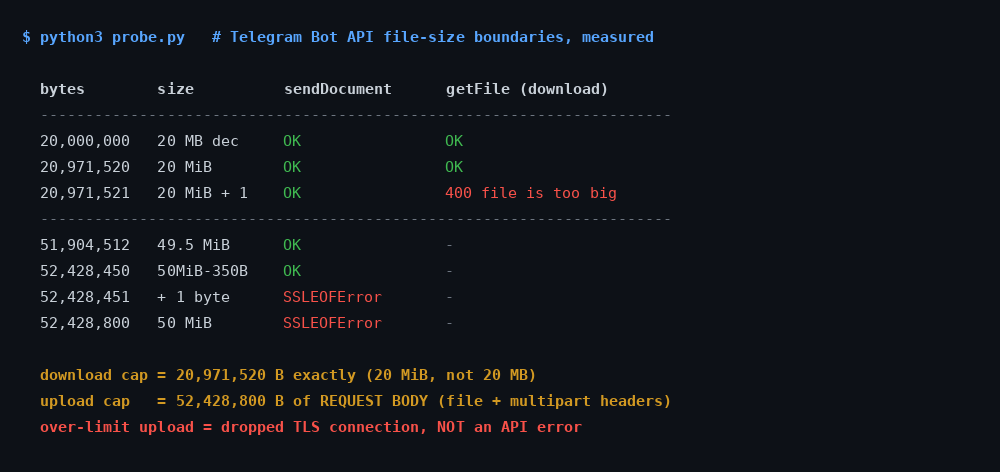

Telegram Bot File Size Limits: The Exact Byte Cutoffs
The first time a Telegram bot of mine hit a file limit, the symptom made no sense. The bot could send a 40 MB video to a user without complaint. When the same user forwarded a 25 MB video back, the bot could see it, log its size, and read its file_id — and then could not download it. Not slowly. Not with a retry. At all, permanently.
That is not a bug in anyone's code. It is the shape of the Bot API: the number governing what a bot may send and the number governing what it may fetch are different numbers, and the gap between them is where media bots go to die.
The official figures are 20 MB down and 50 MB up. What the docs do not say is which megabyte they mean, what the limit is actually measured against, or what happens at the boundary. I wanted all three, so I measured them against a live bot, one byte at a time.

How I tested it
The probe generates files of a target size filled with os.urandom, so nothing on the path can compress them into a smaller request than I asked for. Each file goes up through sendDocument as multipart/form-data against a real bot token — a throwaway bot, never one serving users — and the response is recorded verbatim, including the HTTP status and any transport-level exception.
For anything that uploads successfully, the probe immediately calls getFile on the returned file_id to see whether the same bot can fetch back the thing it just sent. Every message the probe creates is deleted with deleteMessage at the end of the run, so the test leaves no residue in the chat.
Two deliberate choices are worth stating. I sized files in binary units rather than round decimal numbers, because the entire question is which unit Telegram means. And I tested the byte immediately either side of each candidate boundary, because a limit you have only bracketed to the nearest megabyte is a limit you have not actually found.
The download cap is exactly 20 MiB
This one is clean, and it is exact:
| File size | In words | getFile result |
|---|---|---|
| 20,000,000 B | 20 MB decimal | OK |
| 20,971,520 B | 20 MiB | OK |
| 20,971,521 B | 20 MiB + 1 byte | 400 — file is too big |
The cutoff is 20,971,520 bytes, to the byte. The documented “20 MB” is binary. That gap matters more than it looks: a file of 20,000,000 bytes is genuinely 20 MB in the decimal sense and it downloads fine, so anyone who built their guard rail at size > 20_000_000 is rejecting almost a megabyte of files that would have worked.
The failure itself is well behaved. You get an ordinary JSON response, ok: false, error code 400, description Bad Request: file is too big. It is easy to detect and easy to branch on. Remember this, because the other limit does not extend you the same courtesy.
The upload cap counts your HTTP headers
The upload side did not behave like a file-size limit at all, and working out why took the most interesting hour of the night.
A 49 MiB file (51,380,224 bytes) uploaded fine. A 50 MiB file failed. So far, so unremarkable. But then 50 MiB minus one byte also failed — and a limit that rejects one byte under its own round number is not a limit on the file.
The obvious suspect was the multipart envelope. A multipart/form-data body is not just the file: it carries a boundary string, a content-disposition header per field, the chat_id, the trailing boundary. In my encoder that came to exactly 350 bytes. If Telegram caps the request body at 50 MiB rather than the file, then the largest file I can send is 52,428,800 − 350 = 52,428,450 bytes.
That is a falsifiable prediction with a one-byte resolution, so I ran it:
| File size | Request body | Result |
|---|---|---|
| 51,904,512 B | 49.5 MiB + 350 B | OK |
| 52,428,450 B | exactly 52,428,800 B | OK |
| 52,428,451 B | 52,428,801 B | connection dropped |
| 52,428,800 B | 52,429,150 B | connection dropped |
Exactly as predicted, on the nose. The cap is 52,428,800 bytes of HTTP request body, not of file.
The practical consequence is mildly annoying: your real maximum file size depends on your HTTP client. A library with longer boundary strings, or one that sends extra form fields such as caption or reply_markup, eats further into the allowance. There is no single “maximum file size” you can hard-code and trust across libraries — which is presumably why the docs round it to “50 MB” and leave it there.
If you want a number to actually use: stay under 52,400,000 bytes and you have roughly 28 KB of headroom for envelope overhead, which is more than any sane multipart encoder will spend.
An over-limit upload does not return an error
This is the finding I would most want to know before shipping, and it is invisible from the documentation.
When the body exceeds 50 MiB, Telegram does not respond with 413, or a JSON error, or anything at all. It drops the TLS connection roughly 30 seconds into the upload. In Python that surfaces as:
URLError(SSLEOFError(8, 'EOF occurred in violation of protocol (_ssl.c:2406)'))It reproduced identically on all four over-limit attempts, at a consistent ~30 seconds, while a successful 49.5 MiB upload took 44.5 seconds. So this is not a timeout — the server cuts the connection well before the point at which a legitimate, larger transfer would still have been happily in flight.
Why this specific failure mode is dangerous. Almost every HTTP retry policy treats 4xx as permanent and connection errors as transient. This failure is a connection error that is permanent. A bot with sensible retry logic will therefore re-upload an impossible file forever — burning bandwidth on a 50 MiB body every attempt, with nothing in the logs but an intermittent-looking network exception. Guard on file size before you send; do not wait for the API to tell you, because it will not.
The asymmetry is the actual problem
Put the two limits side by side and the design becomes clear:
| Direction | Limit | At the boundary |
|---|---|---|
| Bot sends (multipart) | 52,428,800 B of request body | TLS connection dropped |
| Bot sends (by URL) | 20 MB, 5 MB for photos | 400 |
| Bot downloads | 20,971,520 B | 400 — file is too big |
A bot may hand out files two and a half times larger than it is allowed to pick up. For most bots this never surfaces, because they only ever send things they generated themselves. For anything that processes what users send it — a converter, a downloader, a backup bot, an OCR bot — it is the wall you hit in week one.
And it is a hard wall. When a user forwards a 30 MiB video, your bot receives a perfectly valid update. The file_id is real. file_size is populated and tells you exactly how big it is. Everything looks retrievable. getFile then returns 400, and no amount of retrying, re-requesting, or waiting changes that. The bytes exist on Telegram's servers and your bot simply has no method that will hand them over.
The one mercy: because file_size arrives in the update before you attempt anything, you can detect this instantly and tell the user something true. A bot that replies “that file is 30 MB and I can only fetch 20 MB” is infinitely better than one that says “processing” and then goes quiet.
What to do about it
Run a local Bot API server. Telegram publishes the server as open source at tdlib/telegram-bot-api, and it is the only real fix. It lifts uploads to 2000 MB and removes the download limit entirely; better still, it returns an absolute local file path in file_path, so for a bot on the same machine there is no download step at all. The cost is that you now run a stateful service that wants real disk and real memory — which is a genuine consideration if, like me, you are running bots on a 1 GB VPS.
Check file_size before you do anything else. One comparison against 20,971,520, and a clear message to the user. This is the highest-value four lines in any media bot.
Do not build the guard at 20,000,000 or 50,000,000. Both are wrong in the same direction, and both quietly reject files that work.
Treat over-limit uploads as permanent, in code. Since the API will not classify them for you, your own size check has to. Otherwise your retry policy does the classifying, and it will get it wrong.
The measured limits, on three pages — free
The 20 MiB / 50 MB numbers from this post, plus the rest of what I have bisected against the live API: 4096 counted in code points, callback_data at 64 bytes, the “max 8 buttons per row” rule that does not exist, and a poll open_period that is silently clamped instead of refused. Measured, not copied from the docs.
Building on Telegram for something lighter?
My free planner lays out a Telegram game night — rounds, timings, poll structure — in about a minute, no signup.
Build a game night → Or read how to run one end to end.What I did not test
Three honest gaps. I did not test a local Bot API server's 2000 MB ceiling — that needs a server I would have to stand up and feed 2 GB through, and I am not going to claim a number I have not seen. I did not test the URL-upload path (sendDocument with an http:// URL instead of bytes), where the docs quote a lower 20 MB limit that I have taken on faith rather than measured. And every number here comes from one bot, on one network path, from Europe.
On that last point I am fairly relaxed, for one reason: the 350-byte overhead prediction landed exactly. A network artefact does not reproduce a byte-precise boundary you calculated in advance from the structure of your own request body. That the prediction held is much stronger evidence than the four failures on their own.
The short version
- Download: 20,971,520 bytes, exactly. One more byte gives a clean
400 file is too big. - Upload: 52,428,800 bytes of request body, multipart headers included. Budget ~52,400,000 for the file.
- Both are binary. 20,000,000 and 50,000,000 are both inside their respective limits.
- Over-limit uploads drop the connection instead of erroring. Guard on size yourself.
- You can send 2.5× what you can fetch. Check
file_sizeon arrival and say so plainly.
Telegram in Production — the parts that bite you
The size guard from this post, finished: the exact constants, a pre-send check that fails loudly instead of retrying forever, and the on-arrival file_size reply that saves your users a silent wait. Plus an initData validator with signature excluded and auth_date enforced, poll payloads Telegram will not silently rewrite, and a systemd unit linter for the two failure modes that cost me weeks. 55 tests you can run from the zip.
More from the Telegram build log
- Telegram's 4096 limit is not characters: the cap counts code points, the entity offsets count UTF-16, and 4,096 emoji fit in one message.
- I forged Telegram initData: which payloads pass validation, and the field that broke every old validator.
- I tested Telegram's poll limits: twelve options, and one timer behaviour that closes your round early.
- 13 Telegram bots on a $4.17 VPS: the real RAM numbers, measured.